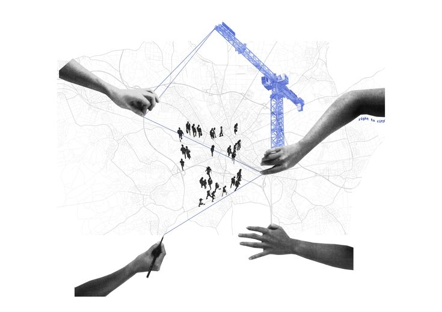

A visual story in six chapters, about five minutes
How one crore became five
Odisha's people as 100 dots. Scroll, and watch the same hundred rearrange through 125 years.
If Odisha were 100 people
About 4.57 crore people live in Odisha. Shrink the state to 100 and each dot stands for roughly 4.6 lakh of them.
Keep your eye on the dots. They are the same 100 all the way through.
2021 figure, projected from the Census of India 2011: Population Projections for India and States 2011–2036, Technical Group on Population Projections, National Commission on Population, MoHFW (July 2020)
83 in 100 live in a village
83 of the 100 live in a village. 17 live in a town or city.
The most urban district is Khordha (48%), home to Bhubaneswar. The most rural is Boudh (5%).
Census of India 2011, district urban shares weighted by population
23 in 100 belong to one of 62 tribal communities
23 of the 100 belong to a Scheduled Tribe, from 62 communities. 13 of them are particularly vulnerable tribal groups.
Across India the share is about 9 in 100. Odisha, with about 3% of India's people, is home to 9.2% of its tribal population.
Census of India 2011; Government of Odisha

For fifty years, growth was slow
In 1901, the land that is Odisha today held 1.03 crore people. For half a century the number changed slowly.
By 1951 it had added 43 lakh people, reaching 1.46 crore.
Census of India, 1901–1951
Then, as more children survived, it nearly tripled
As health improved and more children survived, the population grew 2.9 times in sixty years, to 4.20 crore by the 2011 Census.
Census of India, 1951–2011
Still rising, more gently
The official projections keep the line rising, to 4.90 crore by 2036, another 71 lakh people since the 2011 Census.
Look at the dashed end. The line is beginning to level, the mark of a state that has moved to smaller families and longer lives.
Population Projections for India and States 2011–2036, Technical Group on Population Projections, National Commission on Population, MoHFW (July 2020), Odisha, Table 17
Growth peaked in the 1960s and is settling
Growth peaked at 2.5% a year in 1961–71. By 2031–36 it is projected at 0.32%.
Odisha reached this stage ahead of the country as a whole. Between 2011 and 2021 it grew 8.9%, against 12.6% for India.
Census of India 1901–2011; Population Projections for India and States 2011–2036, Technical Group on Population Projections, National Commission on Population, MoHFW (July 2020)
Families have become smaller
The newest survey, NFHS-6 (2023–24, published May 2026), puts Odisha at 1.7 children per woman, from 1.8 in NFHS-5 (2019–21). It is 1.5 in towns and 1.8 in villages.
Each dot is now a state. At 2.1 children per woman, each generation replaces itself. In 2011–15, 9 of the 22 larger states were above that line. Odisha, at 2.10, had already reached it.
NFHS-6 (2023–24), IIPS and MoHFW, fact sheets published May 2026; NFHS-5 (2019–21). States: Population Projections for India and States 2011–2036, Technical Group on Population Projections, National Commission on Population, MoHFW (July 2020), Table 3
By 2031–35, 21 of 22 states are projected below replacement
By 2031–35, the projections put 21 states below replacement. Odisha is projected at 1.71, close to India's 1.73.
Smaller families let households and the state put more into each child's health and schooling.
Population Projections for India and States 2011–2036, Technical Group on Population Projections, National Commission on Population, MoHFW (July 2020), Table 3
65 in 100 are of working age
Back to our 100 people. In 2021, 24 were children under 15, 65 were of working age and 11 were 60 or older.
With so many adults of working age, Odisha is inside its demographic window, a stretch of years with more earners than dependents.
Population Projections for India and States 2011–2036, Technical Group on Population Projections, National Commission on Population, MoHFW (July 2020), Odisha, Table 18
People are living longer
By 2036, children are 19 of the 100 and working age 64, while elders rise to 17.
In real numbers, people aged 60 and over go from 52 lakh to 84 lakh, an increase of 59% in fifteen years. Longer lives are a result of better health.
Population Projections for India and States 2011–2036, Technical Group on Population Projections, National Commission on Population, MoHFW (July 2020), Odisha, Tables 17 and 18
Thirty districts, thirty profiles
Each district has its own make-up. Scheduled Tribes form most of the population in Mayurbhanj (59%), Malkangiri (58%) and Rayagada (56%), and a small share in Puri (0.4%).
Select any district on the map to open its full profile.
Census of India 2011
Literacy across the map
In the 2011 Census, literacy ranged from Khordha (86.9%) to Nabarangpur (46.4%), a span of 41 points.
The map shows where further gains in schooling can add the most.
Census of India 2011
The coast reaches an older age structure first
By 2036 the share aged 60 and over is projected to range from Jagatsinghapur (21.5%) to Malkangiri (13.0%).
Coastal districts reach an older age structure first. Southern districts stay younger for longer, which gives them more time to build on schooling and health.
UNFPA India, District Level Population Projections in Selected States of India, 2021 & 2026 (2022), carried forward to 2036 with the ORGI state projection (Technical Group on Population Projections, July 2020). An estimate.
Three opportunities in the numbers
Fewer children means schools can put more into quality for each child.
A working-age peak means skills and jobs can pay off most while the window is open.
More elders means pensions, health and care can be planned well in advance.
Because each district moves at its own pace, plans work best district by district.
The figures behind this story
| Figure | Value | Source |
|---|---|---|
| Loading from the portal's data… | ||